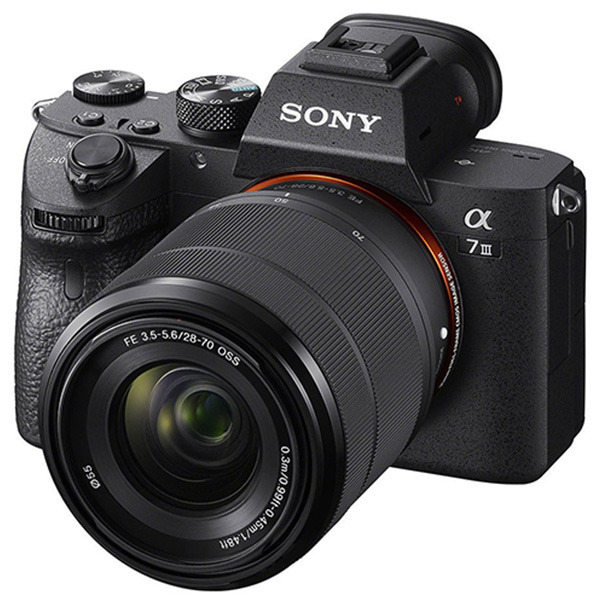
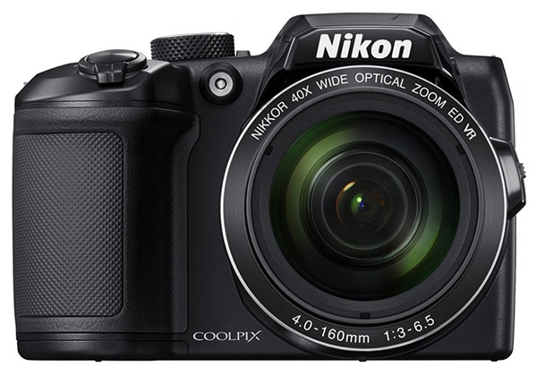

Fotoaparáty
Canon EOS 2000D
- Popis:
- Snímajte pomocou 24,1-megapixelového fotoaparátu EOS 2000D s ľahkosťou detailné fotografie v kvalite digitálnej zrkadlovky a videozáznamy v rozlíšení Full HD, a to aj v náročných svetelných situáciách. Snímajte na diaľku a ihneď sa so zábermi podeľte vďaka technológiám Wi-Fi, NFC a aplikácii Canon Camera Connect.
Špecifikácie:
- Výrobca: CANON
- Typ fotoaparátu: zrkadlovky
- Rozlíšenie: 24.1 Mpix
- Napájanie: Akumulátor
- Typ snímača: CMOS
- Formát snímača: APS-C
Cena:
407,80 € 349,99 €
Sony Alpha A7 III
- Popis:
- Prebuďte v sebe kreatívnu stránku a objavte nekonečné možnosti, ktoré ponúka digitálny fotoaparát Alpha A7 III značky Sony. Model so snímačom Full-Frame CMOS poskytujúcim rozlíšenie 24.2 Mpix je vybavený perfektným zaostrovacím systémom, ktorý mimo iného disponuje 693 zaostrovacími bodmi alebo sériovým snímaním s rýchlosťou 10 snímok za sekundu. Široký rozsah hodnôt citlivosti vás nesklame za žiadnej svetelnej situácie a ponúkne vám obraz bez pridaného šumu. Odolné telo s pevným bajonetom, dvomi pamäťovými slotmi a výklopným LCD displejom vám uľahčí ovládanie prístroja, zatiaľ čo integrovaná stabilizácia vás zachráni od rozmazaných snímok. Okrem fotografií môžete robiť i HDR videá v 4K rozlíšení.
Špecifikácie:
- Výrobca: Sony
- Typ fotoaparátu: kompakty s výmenným objektívom
- Rozlíšenie: 24.2 Mpix
- Napájanie: Akumulátor
- Typ snímača: CMOS
- Formát snímača: Full Frame / FX
Cena:
2 041,40 €

Sony Alpha A6000
- Popis:
- Model α6000 dokáže vyhotoviť čisté zábery v rozlíšení až 24,3 MP. O ostrosť sa stará systém bodového zaostrovania. Jadro fotoaparátu tvorí výkonný procesor, ktorý zároveň vylepšuje prípadný šum spôsobený nepriaznivými fotografickými podmienkami. Za dobrými zábermi stojí aj v porovnaní s konkurenciou väčší snímač. Na funkcie tohto fotoaparátu sa možno spoľahnúť tiež pri nakrúcaní videí. Ten najvyhovujúcejší model si môžete vybrať spomedzi niekoľkých typov objektívov a farebných vyhotovení. Prístroj padne vďaka kompaktným rozmerom do každej ruky a na cestách nebude takou záťažou, ako klasická zrkadlovka.
- Výrobca: Sony
- Typ fotoaparátu: kompakty s výmenným objektívom
- Rozlíšenie: 24.3 Mpix
- Napájanie: Akumulátor
- Typ snímača: CMOS
- Formát snímača: APS-C
Špecifikácie:
Cena:
509,00 €

Nikon Coolpix B500
- Popis:
- Ultrazoom COOLPIX B500 od Nikonu je zástupcom novej rady B, ktorá nadväzuje na obľúbené predchodcu L a P. Prináša 40 × optický zoom a je vybavený 1 / 2,3 "CMOS BSI snímačom. Vhodný je pre nadšencov, ktorí chcú zachytávať blízke aj vzdialené objekty a akcie v perfektnej kvalite. Má výklopný displej, ergonomický dizajn a ľahko sa drží. Padne pohodlne do ruky a je navrhnutý v klasickom štýle. Ponúka vysoký výkon v vreckových rozmeroch.
- Výrobca: NIKON
- Typ fotoaparátu: kompaktné
- Rozlíšenie: 16 Mpix
- Napájanie: AA
- Typ snímača: CMOS
Špecifikácie:
Cena:
265,30 €

Nikon D3500
- Popis:
- Vyzdvihnite svoje fotografie na vyššiu úroveň pomocou digitálnej jednookej zrkadlovky D3500 z dielne firmy Nikon. Prekvapí vás kompaktným prevedením a jednoduchým ovládaním vhodným dokonca aj pre začiatočníkov. Vždy sa budete môcť tešiť na kvalitné zábery plné detailov, o ktoré sa postará kombinácia snímača vo formáte DX s 24,2 miliónmi pixelov a prvotriedneho objektívu NIKORR. Nie je pritom dôležité, v ktorej časti dňa si fotoaparát vezmete do rúk. Zásluhou vysokej citlivosti ISO intenzita svetla nezohráva žiadnu úlohu. Vďaka spojeniu svižného automatického zaostrovania a rozmerného LCD displeja zachytíte každý okamih. Ďalšou možnosťou je nahrávanie kvalitných videí vo Full HD rozlíšení. Svoje výtvory môžete pohodlne zdieľať prostredníctvom mobilnej aplikácie pre Android alebo iOS.
- Výrobca: Sony
- Typ fotoaparátu: zrkadlovky
- Rozlíšenie: 24.2 Mpix
- Napájanie: Akumulátor
- Typ snímača: CMOS
- Formát snímača: DX
Špecifikácie:
Cena:
519,00 €

© 2022 Roman Radvanskyi